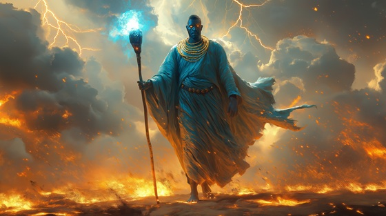

In Yoruba mythology, Shango’s power over thunder and lightning is traced to the edun ara — sacred thunderstones believed to fall from the sky. These stones were not mere relics; they were the voices of the gods, and only one man could command them.
Shango is said to have learned their language. Some say he called lightning with his voice, others that he danced storms into being. His staff became a weapon of thunder, and his breath could fracture the sky.
He was not just a king. He became the living roar of nature, a bridge between mortal rule and divine judgment. His enemies feared his rage. His followers danced under stormclouds. And wherever a thunderstone fell… it was said he had spoken.
Voice of the Thunderstone
A stone fell from the sky one night,
Cracked the earth with sacred light.
Shango stood, no fear, no shield—
He touched the bolt the gods concealed.
The sky bowed low, the drums grew still—
He rose with fire, crowned by will.
I speak in thunder, I reign in flame,
The storm obeys when I call its name.
I am the voice the heavens lend—
The thunderstone shall never bend.
They watched him strike the clouds apart,
A king whose anger became art.
He danced in ash, his staff aglow,
And summoned storms with every blow.
The air split wide, the world went blind—
And knew its god had been defined.
I speak in thunder, I reign in flame,
The storm obeys when I call its name.
I am the voice the heavens lend—
The thunderstone shall never bend.
He carved a path through lightning's gate,
A mortal crowned by sky-born fate.
No priest nor blade could match his might,
For he had kissed the lips of night.
Not man, not beast, but storm untied—
A god who lives, a king who died.
I speak in thunder, I reign in flame,
The storm obeys when I call its name.
I am the voice the heavens lend—
The thunderstone shall never bend.
Drums like thunder, bones like bells—
The sky remembers where he dwells.
From stone to soul, the pact was sealed—
Now even gods must yield.